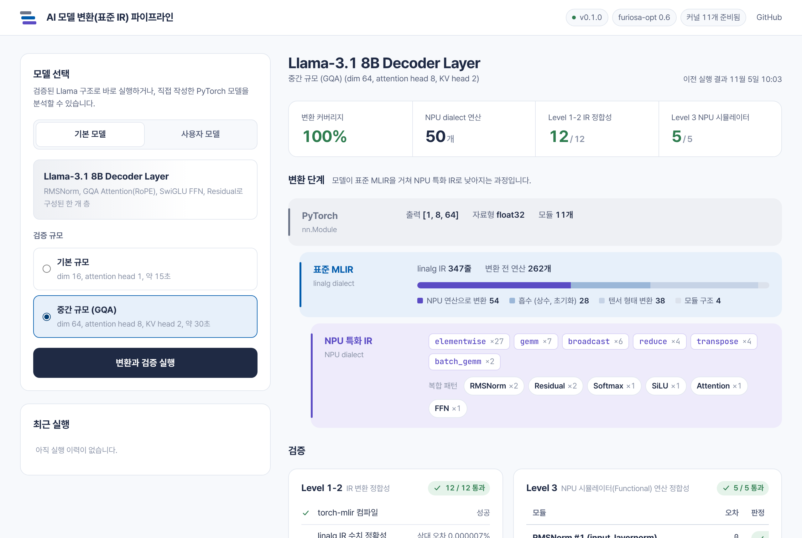

PyTorch 모델이 NPU 특화 IR로
낮아지는 과정을, 한 연산씩 확인합니다
AI 모델 변환(표준 IR) 파이프라인은 PyTorch 모델을 표준 MLIR(linalg)로 변환한 뒤 NPU 특화 IR로 낮추고(Lowering), NPU 시뮬레이터(Functional)에서 연산 정합성까지 검증하는 오픈소스 도구입니다.
docker run --rm -p 127.0.0.1:8100:8100 ghcr.io/soadri/ai-model-ir-pipeline:0.2
Docker만 있으면 됩니다. 실행한 뒤 브라우저에서 localhost:8100에 접속하세요.
PyTorchnn.Module
표준 MLIRlinalg dialect
NPU 특화 IRNPU dialect
변환 파이프라인 구조
모델은 세 단계를 거쳐 낮아지고, 각 단계의 결과를 따로 검증합니다. 같은 검증을 Upstream 생태계가 바뀔 때마다 다시 수행합니다.

- 표준 IR 변환과 분석
- torch-mlir로 모델을 linalg 연산으로 바꾸고, 각 연산을 변환 대상, 흡수, 형태 변환으로 분류합니다. RMSNorm, Softmax, SiLU 같은 복합 패턴도 이 단계에서 찾습니다.
- NPU 특화 IR 변환
- linalg 연산을 NPU dialect의 7가지 연산(gemm, batch_gemm, elementwise, reduce, transpose, fill, conv2d)으로 다시 쓰고, 연산별 커널을 구성해 NPU 시뮬레이터에서 실행합니다.
- 계층적 검증
- Level 1-2에서 IR의 구조와 수치를, Level 3에서 시뮬레이터 실행 결과를 PyTorch 기준값과 비교합니다. 실제 NPU 성능이 아닌 연산 결과의 정합성을 확인하는 단계입니다.
검증 기록
릴리즈가 나올 때와 매주 Upstream을 확인할 때마다 GitHub Actions가 이 기록을 다시 만듭니다.
검증 기록을 불러오는 중입니다.
체험하기
- Docker를 준비합니다 Windows와 macOS는 Docker Desktop, Linux는 Docker Engine을 설치하세요.
-
체험 서버를 실행합니다
위의
docker run명령을 실행하면 이미지(약 380MB)를 받아 서버가 시작됩니다. -
브라우저에서 변환을 실행합니다
localhost:8100에서 Llama-3.1 8B Decoder Layer를 변환하고 검증하거나, 예시 모델과 직접 작성한 모델을 분석해보세요.
사용자 모델 분석은 입력한 코드를 체험 서버 안에서 실행합니다. 본인 PC에서만 실행하세요.
